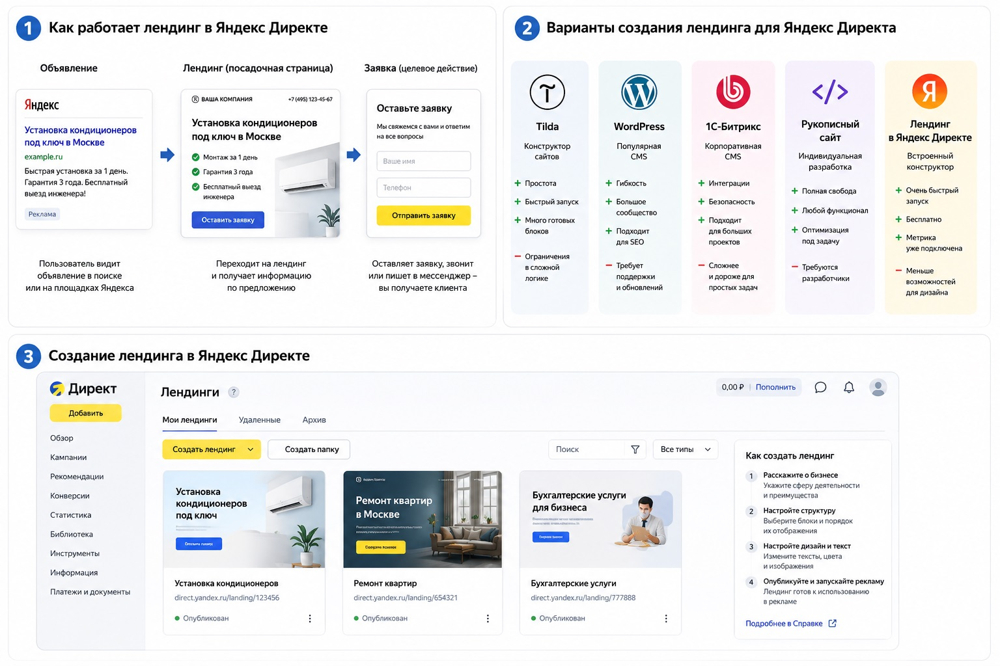

Блог о платном трафике
Что такое лендинг в Яндекс Директе и какой сайт выбрать для рекламы
Лендинг в Яндекс Директе - это страница, на которую пользователь попадает после клика по рекламному объявлению. Обычно она посвящена одному товару, услуге или конкретному предложению и ведет человека к целевому действию: оставить заявку, позвонить, написать в мессенджер или оформить заказ.
Сам Яндекс Директ не требует, чтобы посадочная страница была сделана на какой-то определенной платформе. Можно вести рекламу на собственный сайт, Tilda, WordPress, 1С-Битрикс или рукописный лендинг. Кроме того, сейчас одностраничный сайт можно создать непосредственно внутри Директа.
Что значит «лендинг» в Яндекс Директе
Иногда возникает путаница: лендинг воспринимают как специальный тип рекламной кампании или отдельную технологию Яндекса. На самом деле это прежде всего посадочная страница.
Схема простая:
рекламное объявление → переход на лендинг → целевое действие
Например, человек ищет «установка кондиционера». Он видит объявление в поиске Яндекса, переходит на страницу с описанием услуги, ценами, примерами работ и формой заявки. Эта страница и является лендингом.
Классический лендинг отличается от большого корпоративного сайта тем, что обычно концентрируется на одном предложении. Посетителю не приходится ходить по десяткам разделов и самостоятельно искать нужную информацию.
Для рекламы это удобно: под разные направления бизнеса можно делать отдельные страницы и максимально точно связывать содержание объявления с тем, что человек увидит после перехода.
Каким должен быть лендинг для Яндекс Директа
Универсальной структуры нет. Страница для ремонта квартир и лендинг образовательного курса будут устроены по-разному.
Но хороший рекламный лендинг обычно отвечает на несколько вопросов:
- что именно предлагают;
- для кого подходит предложение;
- почему стоит обратиться именно сюда;
- сколько это стоит или от чего зависит цена;
- какие есть примеры, фотографии, результаты или отзывы;
- как связаться с компанией;
- что нужно сделать прямо сейчас.
Первый экран особенно важен. Если человек кликнул по объявлению «ремонт ванной под ключ», а попал на главную страницу строительной компании со списком из двадцати услуг, часть трафика просто потеряется.
Я обычно смотрю на посадочную страницу еще до запуска рекламы. Иногда проблема будущей высокой стоимости заявки находится не в настройках Директа, а в самом сайте: непонятном предложении, неудобной форме, слабом первом экране или отсутствии нормальной мобильной версии.

На чем можно сделать лендинг для Яндекс Директа
Директу в целом безразлично, на каком движке работает посадочная страница. Выбирать платформу нужно по возможностям, скорости разработки, стоимости поддержки и тому, насколько глубоко придется дорабатывать сайт.
Рукописный сайт
Это страница, которую разработчик делает непосредственно на HTML, CSS, JavaScript или с использованием современных фреймворков.
Главное преимущество - практически полная свобода. Можно реализовать нужный дизайн, нестандартную анимацию, калькуляторы, квизы, интеграции, передачу данных в CRM и сложную аналитику.
Такой вариант я предпочитаю, когда сайт должен быть частью полноценной рекламной воронки, а стандартных возможностей конструкторов уже недостаточно.
Минус очевидный - понадобится разработчик. Самостоятельно быстро поменять сложный блок иногда труднее, чем на конструкторе.
Tilda
Tilda - один из самых популярных вариантов для рекламных лендингов. Страницу можно собрать из готовых блоков или сделать практически индивидуальный дизайн через Zero Block.
Для большинства услуг, онлайн-школ, консультаций, мероприятий и других проектов возможностей Tilda хватает.
Еще один плюс для рекламы - относительно просто подключается Яндекс Метрика и настраивается отслеживание форм и других действий пользователя.
Как настроить цели Яндекс Метрики на Tilda
WordPress
WordPress подходит, если кроме одной рекламной страницы сайт со временем должен превратиться в более крупный проект: появятся статьи, разделы услуг, SEO-страницы, каталог и другой контент.
Сам лендинг можно собрать с помощью темы, визуального редактора или индивидуальной верстки.
Плюс WordPress - большое количество готовых решений и возможность постепенно развивать сайт. Минус - плагины, шаблоны и сам движок нужно поддерживать, обновлять и следить, чтобы сайт оставался быстрым и нормально работал после изменений.
1С-Битрикс
1С-Битрикс чаще встречается на корпоративных сайтах и интернет-магазинах. Делать на нем исключительно небольшой одностраничный лендинг обычно нет особого смысла, но если вся инфраструктура компании уже работает на Битриксе, отдельные рекламные посадочные страницы вполне можно создавать внутри существующего сайта.
Для больших проектов преимуществом становятся интеграции и возможность работать в рамках общей системы сайта. Для простого рекламного лендинга решение получается заметно тяжелее, чем Tilda или небольшой собственный сайт.
Лендинг прямо внутри Яндекс Директа
Сейчас собственный сайт для запуска рекламы вообще не обязателен. В Яндекс Директе появился встроенный инструмент для создания бесплатных одностраничных сайтов.
Лендинг можно создать по описанию бизнеса или на основе уже существующего сайта. Яндекс помогает сформировать структуру, тексты и изображения. На страницу можно добавить формы, контакты, карту и другие стандартные блоки. Сбор заявок и инструменты Яндекс Метрики уже подключены.
Создать страницу можно через раздел «Лендинги», во время настройки Мастера кампаний или через сценарий запуска рекламы без сайта. По состоянию на 2026 год Яндекс указывает, что этот инструмент доступен пользователям из России.
Получается очень быстрый вариант: не нужен программист, хостинг и отдельная разработка.
Но я бы не воспринимал такой лендинг как полноценную замену хорошему собственному сайту во всех ситуациях.
Для теста новой услуги, срочного запуска рекламы или резервной страницы инструмент вполне полезен. Если же через Директ постоянно проходит серьезный объем трафика, обычно лучше иметь собственную посадочную страницу, где вы полностью управляете структурой, дизайном, аналитикой, интеграциями и дальнейшим развитием сайта.
В старых материалах о Директе также часто встречается термин «Турбо-сайт». Яндекс развивал отдельный конструктор Турбо-сайтов еще с 2020 года. В актуальных материалах 2026 года основной сценарий быстрого запуска без собственного сайта Яндекс описывает уже через раздел «Лендинги» в Директе.
Сайты в Яндекс Бизнесе
У Яндекса есть еще один конструктор - внутри Яндекс Бизнеса. Он позволяет автоматически собрать бесплатный сайт на основе данных профиля компании.
Можно разместить информацию о компании, товары и услуги, отзывы, фотографии, контакты, кнопки действий и даже корзину. Такой сайт размещается на домене формата название.clients.site.
Это тоже простой способ получить рабочую страницу без разработки. Особенно логично он выглядит для небольшого локального бизнеса, который уже активно использует карточку компании и Яндекс Карты.
Но возможности дизайна и построения сложных рекламных воронок здесь ограничены. Для небольшой компании этого может быть достаточно, для более серьезного проекта я бы рассматривал такой сайт скорее как базовое решение.
Яндекс KIT - отдельный вариант для интернет-магазинов
В 2025 году Яндекс запустил еще одну платформу - Яндекс KIT. Это уже не обычный конструктор лендингов, а no-code платформа для запуска собственного интернет-магазина. В ней есть готовая инфраструктура для товаров, заказов, оплаты, доставки и интеграций.
Поэтому сравнивать KIT напрямую с Tilda или встроенным лендингом Директа не совсем правильно.
Если нужно рекламировать одну услугу и собирать заявки, KIT для этого избыточен. Если бизнес продает большой ассортимент товаров и нужен полноценный интернет-магазин, это уже более подходящий сценарий.
Какой лендинг лучше использовать для Яндекс Директа
Выбор я бы делал исходя из задачи:
| Задача | Что выбрать |
|---|---|
| Быстро проверить новую услугу или гипотезу | Лендинг внутри Яндекс Директа |
| Небольшой локальный бизнес | Tilda или сайт Яндекс Бизнеса |
| Обычный рекламный лендинг для услуг | Tilda или собственная разработка |
| Нужен индивидуальный дизайн и сложная аналитика | Рукописный сайт |
| Планируется большой информационный сайт и SEO | WordPress |
| Компания уже работает на 1С-Битрикс | Посадочная страница внутри существующего сайта |
| Полноценный интернет-магазин | CMS магазина или Яндекс KIT |
Нет платформы, которая сама по себе делает рекламу эффективной. Можно собрать красивый дорогой сайт и получать мало заявок. Можно сделать довольно простой лендинг и получить хорошую конверсию, если предложение точно соответствует запросу пользователя.
Поэтому я сначала смотрю не на движок, а на связку реклама → предложение → посадочная страница → целевое действие → аналитика.
Нужно ли устанавливать Яндекс Метрику на лендинг
Для собственного сайта - да. Без аналитики вы будете видеть клики и расходы в Директе, но не получите нормальной картины поведения пользователей после перехода.
В Метрике можно фиксировать отправку формы, звонки, переходы в мессенджеры, покупки и другие полезные действия, а затем использовать эти цели при анализе и оптимизации рекламных кампаний.
Во встроенных лендингах Директа инструменты Метрики уже интегрированы, поэтому базовая статистика по заявкам и источникам доступна сразу после запуска.
Главное
Лендинг в Яндекс Директе - это посадочная страница, на которую приходит человек после рекламного объявления. Она может быть сделана практически на любой платформе: Tilda, WordPress, 1С-Битрикс, собственном движке или в одном из инструментов Яндекса.
Если нужно запустить рекламу максимально быстро, сейчас страницу можно создать прямо внутри Директа. Для теста или резервного варианта это вполне рабочее решение. Для постоянной рекламы и более сложной воронки я предпочитаю отдельный сайт, где можно полностью контролировать структуру, аналитику и дальнейшие доработки.